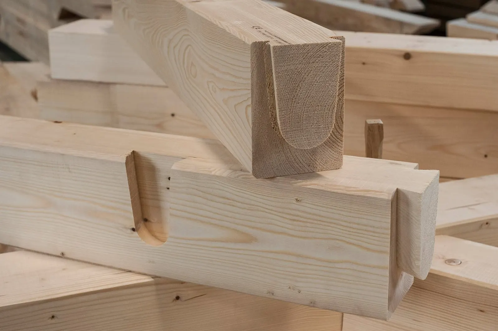
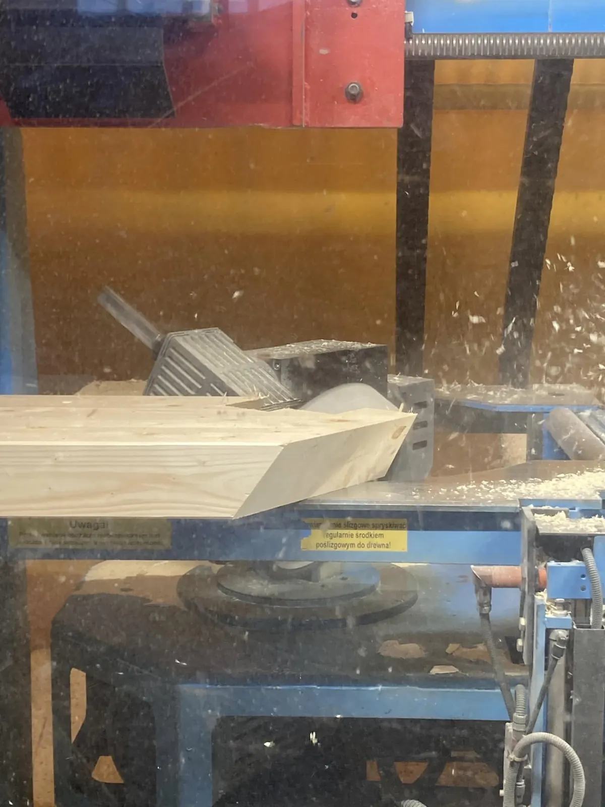

Więźby dachowe cięte na CNC
Elementy więźby przygotowujemy na centrum obróbczym Hundegger K2i: docinamy na wymiar, wiercimy, wycinamy czopy, gniazda i zakończenia krokwi. Na budowę przyjeżdża komplet, który pasuje do projektu.
- Złącza ciesielskie tradycyjne: czop i gniazdo, jaskółczy ogon, wrąb, nakładka, zakładka
- Albo montaż na okuciach ciesielskich, jeśli tak przewiduje projekt
- Kratownice i wiązary kratowo-ramowe
- Ozdobne końcówki krokwi, profile wypukłe i wklęsłe
- Montaż więźby przez naszą ekipę albo sama dostawa elementów